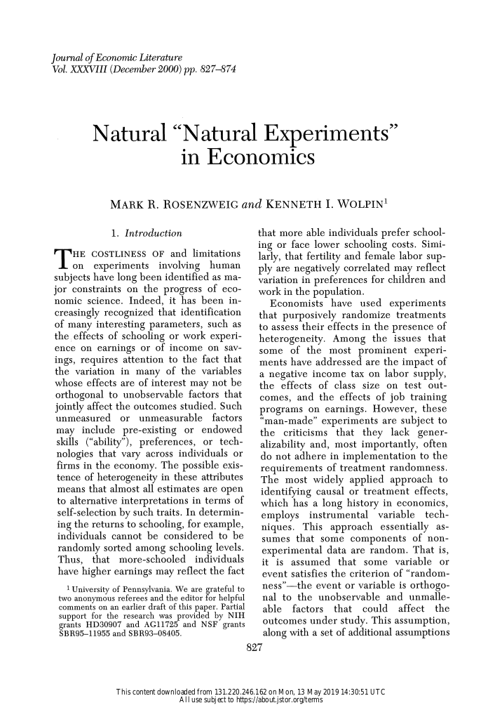

Download the notebook here!
Interactive online version: 
Instrumental variable estimators of causal effects¶
Overview
Causal effect estimation with a binary IV
Traditional IV estimators
Instrumental variable estimators in the presence of individual-level heterogeneity
Conclusions
Causal effect estimation with a binary IV¶
We consider the standard relationship
\begin{align*} Y = \alpha + \delta D +\epsilon, \end{align*}
where \(\delta\) is the true causal effect that (for now) is assumed to be constant.

No conditioning estimator would effectively estimate the causal effect of \(D\) on \(Y\) because no observed variable satisfy the back-door criterion.
If perfect stratification cannot be be enacted with the available data, one possible solution is to find an exogenous source of variation that determines \(Y\) only by way of the causal variable \(D\). The causal effect is then estimated by measuring how much \(Y\) varies with the proportion of the total variation in \(D\) that is attributable to the exogenous variation.
\begin{align*} E[Y] = E[\alpha + \delta D + \epsilon] = \alpha + \delta E[D] + E[\epsilon] \end{align*}
We can rewrite this as a difference equation in \(Z\):
\begin{align*} E[Y \mid Z = 1] - E[Y \mid Z = 0] = \delta (E[D \mid Z = 1] - E[D \mid Z = 0]) + (E[\epsilon \mid Z = 1] - E[\epsilon \mid Z = 0]) \end{align*}
Then we divide both sides by \(E[D \mid Z = 1] - E[D \mid Z = 0]\).
\begin{align*} \frac{E[Y \mid Z = 1] - E[Y \mid Z = 0]}{E[D \mid Z = 1] - E[D \mid Z = 0]} = \frac{\delta (E[D \mid Z = 1] - E[D \mid Z = 0]) + (E[\epsilon \mid Z = 1] - E[\epsilon \mid Z = 0])}{E[D \mid Z = 1] - E[D \mid Z = 0]} \end{align*}
If Figure 9.1 (a) is an accurate description of the causal structure, then \(E[\epsilon \mid Z = 1] = E[\epsilon \mid Z = 0] = 0\).
\begin{align*} \frac{E[Y \mid Z = 1] - E[Y \mid Z = 0]}{E[D \mid Z = 1] - E[D \mid Z = 0]} = \delta \end{align*}
\begin{align*} \hat{\delta}_{IV, WALD} = \frac{E[Y \mid Z = 1] - E[Y \mid Z = 0]}{E[D \mid Z = 1] - E[D \mid Z = 0]} \end{align*}
The assumption that \(\delta\) is an invariant structural effect is crucial for this result.
Demonstration dataset¶
We wish to determine whether private high school outperform public high schools as measured by \(9^{th}\) grade achievement tests. There exists a school voucher program in the city that covers tuition in case one attends private school. However, there are budgetary limits and so the vouchers are available only to 10% of students and allocated by a lottery.

Winning the lottery increases private school attendance.
[5]:
def get_sample_iv_demonstration():
"""Simulates sample.
Simulates a sample of 10,000 individuals for the IV demonstration
based on the information provided in our textbook.
Notes:
The school administration distributed 1,000 vouchers for
private school attendance in order to shift students
from public into private school. The goals is to increase
educational achievement.
Args:
None
Returns:
A pandas Dataframe with the observable characteristics (Y, D, Z)
for all individuals.
Y: standardized test for 9th graders
D: private school attendance
Z: voucher available
"""
# We first initialize an empty Dataframe with 10,000 rowns and three
# columns.
columns = ["Y", "D", "Z"]
index = pd.Index(range(10000), name="Identifier")
df = pd.DataFrame(columns=columns, index=index)
# We sample the exact number of individuals following the description
# in Table 9.2.
for i in range(10000):
if i < 8000:
y, d, z = np.random.normal(50), 0, 0
elif i < 9000:
y, d, z = np.random.normal(60), 1, 0
elif i < 9800:
y, d, z = np.random.normal(50), 0, 1
else:
y, d, z = np.random.normal(58), 1, 1
df.loc[i, :] = [y, d, z]
# We shuffle all rows so we do not have the different subsamples
# grouped together.
df = df.sample(frac=1).reset_index(drop=True)
# We set the types of our columns for prettier formatting later.
df = df.astype(np.float)
df = df.astype({"D": np.int, "Z": np.int})
return df
Let’s have a look at the structure of the data.
[6]:
df = get_sample_iv_demonstration()
df.head()
[6]:
| Y | D | Z | |
|---|---|---|---|
| 0 | 48.606920 | 0 | 0 |
| 1 | 50.240003 | 0 | 0 |
| 2 | 49.377337 | 0 | 0 |
| 3 | 60.885880 | 1 | 0 |
| 4 | 50.160785 | 0 | 0 |
How about the conditional distribution of observed outcomes?
[7]:
df.groupby(["D", "Z"])["Y"].mean()
[7]:
D Z
0 0 50.009760
1 49.962199
1 0 60.034692
1 58.072959
Name: Y, dtype: float64
We can always run an OLS regression first to get a rough sense of the data.
[8]:
rslt = smf.ols(formula="Y ~ D", data=df).fit()
rslt.summary()
[8]:
| Dep. Variable: | Y | R-squared: | 0.904 |
|---|---|---|---|
| Model: | OLS | Adj. R-squared: | 0.904 |
| Method: | Least Squares | F-statistic: | 9.374e+04 |
| Date: | Tue, 09 Jun 2020 | Prob (F-statistic): | 0.00 |
| Time: | 09:34:37 | Log-Likelihood: | -14482. |
| No. Observations: | 10000 | AIC: | 2.897e+04 |
| Df Residuals: | 9998 | BIC: | 2.898e+04 |
| Df Model: | 1 | ||
| Covariance Type: | nonrobust |
| coef | std err | t | P>|t| | [0.025 | 0.975] | |
|---|---|---|---|---|---|---|
| Intercept | 50.0054 | 0.011 | 4555.317 | 0.000 | 49.984 | 50.027 |
| D | 9.7023 | 0.032 | 306.173 | 0.000 | 9.640 | 9.764 |
| Omnibus: | 12.957 | Durbin-Watson: | 2.022 |
|---|---|---|---|
| Prob(Omnibus): | 0.002 | Jarque-Bera (JB): | 13.196 |
| Skew: | -0.074 | Prob(JB): | 0.00136 |
| Kurtosis: | 3.100 | Cond. No. | 3.13 |
Warnings:
[1] Standard Errors assume that the covariance matrix of the errors is correctly specified.
However, to exploiting the structure of the dataset, we rather want to compute the IV estimate.
[9]:
def get_wald_estimate(df):
"""Calculate Wald estimate.
Calculates the Wald estimate for the causal effect of treatment
on an observed outcome using a binary instrument.
Args:
df: A pandas DataFrame
Returns:
A float with the estimated causal effect.
"""
# We compute the average difference in observed outcomes.
average_outcome = df.groupby("Z")["Y"].mean().to_dict()
numerator = average_outcome[1] - average_outcome[0]
# We compute the average difference in treatment uptake.
average_treatment = df.groupby("Z")["D"].mean().to_dict()
denominator = average_treatment[1] - average_treatment[0]
rslt = numerator / denominator
return rslt
So, let’s see.
[10]:
rslt = get_wald_estimate(df)
print(" Wald estimate: {:5.3f}".format(rslt))
Wald estimate: 5.183
Traditional IV estimators¶
We now move beyond a binary instrument.
\begin{align*} \hat{\delta}_{IV} \equiv \frac{Cov_N(y_i, z_i)}{Cov_N(d_i, z_i)} \end{align*}
Moving towards the population-level relationships:
\begin{align*} \frac{Cov(Y, Z)}{Cov(D, Z)} & = \frac{\delta Cov(D, Z) + Cov[\epsilon, Z]}{Cov(D, Z)} \\ & = \delta \end{align*}
So, this suggests that:
\begin{align*} \frac{Cov(Y, Z)}{Cov(D, Z)} \xrightarrow{p} \delta \end{align*}

Returning to our simulated example, we can now apply the two-stage least squares (2SLS) estimator you are familiar with.
[36]:
df["D_pred"] = smf.ols(formula="D ~ Z", data=df).fit().predict()
smf.ols(formula="Y ~ D_pred", data=df).fit().summary()
[36]:
| Dep. Variable: | Y | R-squared: | 0.002 |
|---|---|---|---|
| Model: | OLS | Adj. R-squared: | 0.002 |
| Method: | Least Squares | F-statistic: | 17.39 |
| Date: | Tue, 09 Jun 2020 | Prob (F-statistic): | 3.07e-05 |
| Time: | 09:59:20 | Log-Likelihood: | -26171. |
| No. Observations: | 10000 | AIC: | 5.235e+04 |
| Df Residuals: | 9998 | BIC: | 5.236e+04 |
| Df Model: | 1 | ||
| Covariance Type: | nonrobust |
| coef | std err | t | P>|t| | [0.025 | 0.975] | |
|---|---|---|---|---|---|---|
| Intercept | 50.5478 | 0.153 | 330.860 | 0.000 | 50.248 | 50.847 |
| D_pred | 5.1830 | 1.243 | 4.170 | 0.000 | 2.747 | 7.619 |
| Omnibus: | 3794.296 | Durbin-Watson: | 1.993 |
|---|---|---|---|
| Prob(Omnibus): | 0.000 | Jarque-Bera (JB): | 11127.197 |
| Skew: | 2.065 | Prob(JB): | 0.00 |
| Kurtosis: | 6.107 | Cond. No. | 38.0 |
Warnings:
[1] Standard Errors assume that the covariance matrix of the errors is correctly specified.
Given the structure of our example, both estimators are equivalent. As of now, statsmodels does not provide good support for the instrumental variables estimation. That is true for a host of methods often used by economists. Often linearmodels provides a viable alternative.
[37]:
from linearmodels import IV2SLS # noqa: E402
df["const"] = 1
IV2SLS(df["Y"], df["const"], df["D"], df["Z"]).fit()
[37]:
| Dep. Variable: | Y | R-squared: | 0.7076 |
|---|---|---|---|
| Estimator: | IV-2SLS | Adj. R-squared: | 0.7075 |
| No. Observations: | 10000 | F-statistic: | 77.109 |
| Date: | Tue, Jun 09 2020 | P-value (F-stat) | 0.0000 |
| Time: | 09:59:21 | Distribution: | chi2(1) |
| Cov. Estimator: | robust | ||
| Parameter | Std. Err. | T-stat | P-value | Lower CI | Upper CI | |
|---|---|---|---|---|---|---|
| const | 50.548 | 0.0748 | 676.20 | 0.0000 | 50.401 | 50.694 |
| D | 5.1830 | 0.5902 | 8.7812 | 0.0000 | 4.0261 | 6.3398 |
Endogenous: D
Instruments: Z
Robust Covariance (Heteroskedastic)
Debiased: False
id: 0x7f9d353b4490
Instrumental variable estimators in the presence of individual-level heterogeneity¶
\begin{align*} Y & = Y^0 + D (Y^1 - Y^0) \\ & = Y^0 + \delta D \\ & = \mu^0 + \delta D + \nu^0, \end{align*}
where \(\mu^0 \equiv E[Y^0]\) and \(\nu^0 \equiv Y^0 - E[Y^0]\). Here, \(\delta\) now has a clear interpretation.
We need to add a four-category latent variable \(C\):
\begin{align*} \text{Compliers (C = c)} & : D^{Z = 0} = 0 \,\text{and}\, D^{Z = 1} = 1 \\ \text{Defiers (C = d)} & : D^{Z = 0} = 1 \,\text{and}\, D^{Z = 1} = 0 \\ \text{Always takers (C = a)} & : D^{Z = 0} = 1 \,\text{and}\, D^{Z = 1} = 1 \\ \text{Never takers (C = n)} & : D^{Z = 0} = 0 \,\text{and}\, D^{Z = 1} = 0 \\ \end{align*}
Analogously to the definition of the observed outcome, \(Y\), the observed treatment indicator variable \(D\) can then be defined as
\begin{align*} D & = D^{Z = 0} + (D^{Z = 1} - D^{Z = 0}) Z \\ &= D^{Z = 0} + \kappa Z \end{align*}
What is the value of \(\kappa\) for the different latent groups?
Identifying assumptions for the Local Average Treatment Effect
Independence, \((Y^1, Y^0, D^{Z = 1}, D^{Z = 0}) \perp \!\!\! \perp Z\)
Nonzero effect of instrument, \(\kappa \neq 0\) for at least some \(i\)
Monotonicty assumption, either \(\kappa \geq 0\) for all \(i\) or \(\kappa \leq 0\) for all \(i\)
If these assumptions are valid, then an instrument \(Z\) identifies the \(LATE\): the average treatment effect for the subset of the population whose treatment selection is induced by the treatment.
\begin{align*} \hat{\delta}_{IV,WALD} \xrightarrow{p} E [\delta \mid C = c] \end{align*}

What can we learn about the different latent groups?
Monotonicity, there are no defiers
Independence, the same distribution of never takes, always takers, and compliers is present among voucher groups
\begin{align*} \frac{Pr_N [d_i = 1, z_i = 0]}{Pr_N[z_i = 0]} \xrightarrow{p} Pr[C = a] \\ \frac{Pr_N [d_i = 0, z_i = 1]}{Pr_N[z_i = 1]} \xrightarrow{p} Pr[C = n] \\ \end{align*}
We also know \(Pr[C = d] = 0\) and thus
\begin{align*} 1 - \frac{Pr_N [d_i = 1, z_i = 0]}{Pr_N[z_i = 0]} - \frac{Pr_N [d_i = 0, z_i = 1]}{Pr_N[z_i = 1]}\xrightarrow{p} Pr[C = c] \\ \end{align*}

How can we learn about the LATE from the information analyzed so far?
\begin{align*} E[\delta \mid C = c] = E [Y^1 - Y^0 \mid C = c] \end{align*}
Let’s start with the following:
\begin{align*} E[Y \mid D = 1, Z = 1] & = \frac{Pr[C = c]}{Pr[C = c] + Pr [C=a]} E[Y^1 \mid C = c] \\ &+ \frac{Pr[C = a]}{Pr[C = c] + Pr [C=a]} E[Y^1 \mid C = a] \\ &\\ E[Y \mid D = 0, Z = 0] & = \frac{Pr[C = c]}{Pr[C = c] + Pr [C=n]} E[Y^0 \mid C = c] \\ & + \frac{Pr[C = n]}{Pr[C = c] + Pr [C=n]} E[Y^0 \mid C = n] \end{align*}
Note that we can consistent estimates for \(E[Y^0 \mid C = n]\) and \(E[Y^1 \mid C = a]\) are provided in the table directly.
Now lets tie this back to the Wald estimator:
\begin{align*} \hat{\delta}_{IV, WALD} = \frac{E[Y \mid Z = 1] - E[Y \mid Z = 0]}{E[D \mid Z = 1] - E[D \mid Z = 0]} \end{align*}
[8]:
get_shares_latent_groups()

[9]:
get_outcome_latent_groups()
Criticism¶
instrument-dependent parameter
limited policy-relevance
Discussion¶
We revisit and discuss the discussion of the LATE’s usefulness.


Table of contents
Introduction
Background and Data
National Random Selection
Social Security Earnings Data
The Effect of Draft Eligibility and Earnings
The Effect of Military Service on Earnings
Estimates Using Draft Eligibility
Efficient Instrumental Variables Estimates
Military Service of Labor Market Experience
Caveats
Treatment Effect Heterogeneity
The Absence of Covariates
Earnings-Modifying Draft Avoidance Behavior
Conclusions


Table of contents
Introduction
Season of Birth, Compulsory Schooling, and Years of Education
Direct Evidence and teh Effect of Compulsory Schooling Laws
Why do Compulsory Schooling Laws Work?
Estimating the Returns to Education
TSLS Estimation
Allowing the Seasonal Pattern in Education to Vary by State of Birth
Estimates for Black Men
Other Possible Effects of Season of Birth
Conclusions

We discuss Rosenzweig & Wolpin (2000) in more detail because it provides a small structural economic model of schooling choice that allows to interpret the instrumental variable estimates of Angrist (1990) and Angrist & Krueger (1991).
\begin{align*}\begin{array}{ll} a &\text{age} \\ y_a & \text{earnings at age a} \\ S & \text{level of schooling attainment} \\ X_a & \text{work experience at age $a$} \\ \mu & \text{ability} \\ a_e & \text{school entry age} \\ a_\kappa & \text{minimum age to leave school}\\ S_0 = a_\kappa - a_e & \text{minimum schooling} \\ c & \text{direct cost of education} \end{array}\end{align*}
Wages are determined as follows: \begin{align*} \ln y_a = f(S, \mu) + g(X_a, \mu) \end{align*}
The authors assume that individuals work full-time after school and there is no uncertainty about wages. Individuals decide whether to pursue one additional year of schooling after the mandatory minimum. If they do so \(s_1\) takes value one and zero otherwise. So, the final level of schooling is \(S_1 = S_0 + s_1\). All individuals work \(A\) periods in the labor market. Spending one additional year in school does not reduce total time in the labor market. However, it results in entering the labor market one year later as schooling precludes working. Ability is the only source of heterogeneity and distributed at random in the population.
The individual’s objective is to choose their final level of schooling such as to maximize their discounted lifetime earnings under the two scenarios \((V_1, V_0)\).
\begin{align*}\begin{array}{ll} V_1(S_1 = 1 | S_0) &= -c + \sum_{a=0}^{A-1} \beta^{a + 1} y_a \\ &= -c + \sum_{a=0}^{A-1} \beta^{a + 1} \exp(f(S_0 + 1, \mu) + g(a, \mu)) \\ &= -c + \sum_{a=0}^{A-1} \beta^{a + 1} \exp(f(S_0 + 1, \mu)) \exp(g(a, \mu)) \\ &= -c + \exp(f(S_0 + 1, \mu)) \sum_{a=0}^{A-1} \beta^{a + 1} \exp(g(a, \mu)) \end{array}\end{align*}
\begin{align*} V_1(S_1 = 0 | S_0) &= \sum_{a=0}^{A-1} \beta^a y_a \\ &= \exp(f(S_0, \mu)) \sum_{a=0}^{A-1} \beta^a \exp(g(a, \mu)) \end{align*}
We now turn attention to the decision rule \(V_1 > V_0\) implies further pursuit of education.
\begin{align*}\begin{array}{ll} -c + \exp(f(S_0 + 1, \mu) \sum_{a=0}^{A-1} \beta^{a + 1} \exp(g(a, \mu)) \\ > \exp(f(S_0 + 1, \mu)) \sum_{a=0}^{A-1} \beta^a \exp(g(a, \mu) \\[20pt] -c + \exp(f(S_0 + 1, \mu) \sum_{a=0}^{A-1} \beta^{a + 1} \exp(g(a, \mu)) \\ > \underbrace{\exp(f(S_0 + 1, \mu)) \sum_{a=0}^{A-1} \beta^a \exp(g(a, \mu)}_{V_1(S_1 = 0 | S_0)} \end{array}\end{align*}
now divide by \(V_1(S_1 = 0 | S_0)\)
\begin{align*}\begin{array}{ll} \frac{\exp(f(S_0 + 1, \mu))}{\exp(f(S_0, \mu))} \beta &> 1 + \frac{c}{V_1(S_1 = 0 | S_0)} \\ &> (1 + \frac{c}{V_1(S_1 = 0 | S_0)}) (1 + r) \\ f(S_0 + 1, \mu) - f(S_0, \mu) &> r + \frac{c}{V_1(S_1 = 0 | S_0)} \end{array}\end{align*}
using \(\ln (1 + x) \approx x\) for small \(x\).
\begin{align*} s_1 = \begin{cases} 1 & \text{if}\quad f(S_0 + 1, \mu) - f(S_0, \mu) \geq r + \ln\left(\frac{c}{V_1(s_1 = 0 \mid S_0)} + 1\right) \\ 0 & \text{otherwise} \end{cases} \end{align*}
If ability increases the marginal schooling return, then there exists a unique cutoff value for ability \(\mu^*\) such that individuals with ability above the cutoff continue schooling while those below do not.
\begin{align*} \frac{\partial f(S_0 + 1, \mu) - f(S_0, \mu)}{\partial \mu} > 0 \end{align*}
Even if randomly assigned, optimizing behavior induces an association between schooling and ability. This generates the ability bias. % \begin{align*} E[ f(S_0 + 1, \mu) \mid \mu > \mu^*] - E[ f(S_0, \mu) \mid \mu < \mu^*] > E[ f(S_0 + 1, \mu) ] - E[ f(S_0, \mu)] \end{align*}
We now turn to the development of the Wald estimator Wald (1940). So, we first derive expected earnings equation for each age \(a\).
\begin{align*} E[\ln y_a] = \pi_1 [f(S_0 + 1, \mu_1) + g(a - a_\kappa - 1, \mu_1)] + (1 - \pi_1) [f(S_0, \mu_2) + g(a - a_\kappa, \mu_2)] \end{align*}
We now consider the following scenario, where we reduce the school entry age by one year but keep the minimum school leaving age unchanged. Type 1 achieve their optimal level of schooling exactly at the school leaving age. Type 2’s will be forced to attend school a year longer. % \begin{align*} E[\ln y_a] = \pi_1 [f(S_0 + 1, \mu_1) + g(a - a_\kappa, \mu_1)] + (1 - \pi_1) [f(S_0 + 1, \mu_2) + g(a - a_\kappa, \mu_2)] \end{align*}
The difference in expected (ln) earnings divided by the difference in expected schooling \(0 \cdot \pi_1 + 1 \cdot (1 - \pi_1)\), the Wald estimator, is thus
\begin{align*}\begin{array}{ll} E[\ln y_a | \underbrace{Z = 1}_{\text{reduced entry age}}] - E[\ln y_a | Z = 0] \\ = \pi_1 (f(S_0 + 1, \mu_1) + g(a - a_\kappa, \mu_1)) \\ \hspace{11pt}+ (1 - \pi _1) (f(S_0 + 1, \mu_2) + g(a - o_\kappa, \mu_2)) \\ \hspace{11pt}- \pi_1 (f(S_0 + 1, \mu_1) + g(a - a_\kappa - 1, \mu_1)) \\ \hspace{11pt}- (1 - \pi_1) (f(S_0, \mu_2) + g(a - o_\kappa, \mu_2)) \\[20pt] = \pi_1 (g(a - a_\kappa, \mu_1) - g(a - a_\kappa - 1, \mu_1)) \\ \hspace{11pt}+ (1 - \pi_1) (f(S_0 + 1, \mu_2) - f(S_0, \mu_2)) \end{array}\end{align*}
divide by difference in schooling attainment
\begin{align*} \pi_1 * 0 + (1 - \pi_1) * 1 \end{align*}
\begin{align*} \frac{\Delta E (\ln y_a)}{\Delta S} = \underbrace{\frac{\pi_1}{1 -\pi_1} [g(a - a_\kappa, \mu_1) - g(a - a_\kappa - 1, \mu_1)]}_{\text{type 1's additional experience}} + \underbrace{[f(S_0 + 1, \mu_2) - f(S_0, \mu_2)]}_{\text{effect of interest (compliers only)}}, \end{align*}
where \(\frac{\Delta E (\ln y_a)}{\Delta S}\) corresponds to \(E(\ln y_a \mid Z = 1) - E(\ln y_a \mid Z = 0)\) and \(Z\) takes value one under the reduced school entry age and zero otherwise. Thus the estimate does not correspond directly to the effect of interest. However, Angrist & Krueger (1991) make the point in Figure V that for the cohort they are looking at \((a = 40, ..., 49)\) the effect of age on earnings is negligible.
Resources¶
Angrist, J. D. (1990). Lifetime earnings and the vietnam era draft lottery: Evidence from social security records. American Economic Review, 80(3), 313–336.
Angrist, J. D., & Imbens, G. W. (1999). Instrumental variables: A study of implicit behavioral assumptions used in making program evaluations. Journal of Human Resources, 34(4), 823– 827.
Angrist, J. D., & Krueger, A. B. (1991). Does compulsory school attendance affect schooling and earnings?. The Quarterly Journal of Economics, 106(4), 979-1014.
Heckman, J. J. (1997). Instrumental variables: A study of implicit behavioral assumptions used in making program evaluations. The Journal of Human Resources, 32(3), 441–462.
Rosenzweig, M. R., & Wolpin, K. I. (2000). Natural ”natural” experiments in economics. Journal of Economic Literature, 38(4), 827–874.